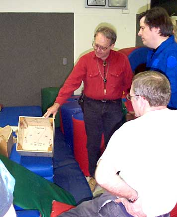

It's always interesting watching the pieces of a project come together. I have been building this small truss-tube unit steadily since late January.
I wanted to explore the deep sky too far south for central California sites. So I decided to build an airline-transportable telescope of respectable size, and do some voyaging.
The telescope needed to be optimized for deep-sky work - I wasn't going south to see planets. Lots of aperture and good light baffling were important, but obstruction size and tube currents were less so.
I planned to transport the telescope on scheduled airline flights. I could put a larger telescope in checked baggage, than in carry-on luggage, even with enough padding to protect it from baggage handlers.
A web article suggested a problem with things with no handles for carrying, or too oddly shaped to stack well, or too flimsy. Web-surfing led to Atlas Case, at http://www.atlascase.com, who stock several lines of tough air transport shipping containers with padding. I ended up buying one.
Most transportable telescopes are stored in pieces at home, driven to an observing site, and assembled there for use. My operations would be more elaborate: As baggage, my telescope would be in more pieces, and smaller ones, than the average instrument in the garage. The plan was to unpack it in a motel room, assemble it there at least partly, then drive it to the site.
Over the years, I have played with such designs, via pencil sketches and dimension and weight estimates. I know of two approaches to a compact portable telescope, distinguished by whether the transportation case is part of the instrument, or not. I decided on a separate case, because I was not sure I could construct an assembly stout enough to protect the contents, and light enough for part of a telescope.
My design became final when sketches convinced me I could construct a truss-tube Dobson so that except for truss poles, the parts would pack into a cube about four inches (10 cm) larger than the clear aperture. One technical risk remained:
Truss poles are the wrong shape for baggage. Those for a 10-inch f/5 are about 40 inches (100 cm) long, so a case for them that fits baggage size limits will have no room for much else - and I do travel with more than a telescope: I need charts and eyepieces, and maybe even extra socks. I needed a way to cut the truss poles in half, and reassemble them in a motel room with a stiff, light, vibration-free joint.
I played with designs for wooden clamps, like those Kriege and Berry (1997) describe for attaching truss poles to the box. I came up with several, but they were too heavy for half-way up the poles of a small telescope. Using telescoping tubing as poles seemed asking for trouble from vibration and slop. I thought of using a piece of oversize tubing as a joint, with O-rings between it and the poles, and that might have worked, but while I was testing it, I came up with a better way, using an old telescope-maker's friend - beeswax!
I found that a section of hollow, square aluminum extrusion could rigidly join two lengths of truss pole, if I used beeswax to take up slop and damp vibration. I cut a short length of extrusion, inserted a piece of truss-pole stock part way into it, and epoxyed it in place, making a socket into which another piece of truss pole would fit. Beeswax made the slip fit into a stiff joint that was entirely satisfactory for the telescope.
It is not necessary to fill the space between pole and extrusion with beeswax. What I do is dip each "male" end of the cut pole into melted beeswax before I travel, to get a thin, uniform coat of beeswax on the portion that goes into the extrusion. A little will do, and once there is some there, you don't necessarily need to keep adding more every time you assemble the poles. I do this part of assembly and dissembly in a motel room. Beeswax softens enough under a hot water faucet to make the task easy.
I carry a little plastic bottle of spare beeswax, that I can melt entirely by putting it in a glass filled with boiling water from my portable coffee heater. That way I can add more beeswax if necessary.
I didn't think a whole lot of this idea when I thought it up - I was just glad to have a scheme that would make my project possible. Yet nearly all the amateur astronomers and amateur telescope makers who have seen the finished instrument have thought the "beeswax trick" to be a considerable technical innovation in the construction of Dobson telescopes. So in case they are right, I have been describing it at length, in case others should find it useful.
With that trick in mind, I went ahead with my project. I had built several telescopes before, including Newtonians to 12.5-inch (32 cm) aperture, but none as complicated mechanically as a truss-tube Dobson, so I was looking forward to a challenge.
|  |
I have had occasion to use good cements, so I made permanent assemblies with glue alone - no fasteners. I selected Weldwood phenolic/formaldehyde wood glue for large areas with no end grains, and used contact cement to wrap Ebony Star around the side bearings. Contact cement works best when you follow the directions: Let it dry smooth and hard before joining the pieces. Don't ask me how I know.
After a few experiments and some visits to hardware stores, I picked threaded inserts and T-nuts for joining pieces that come apart for transportation. I was able to put all of them in places where they would not pull out when the machine screws that went through them were torqued down.
I used stainless fittings and fasteners whenever I could find them. Marine hardware stores offered a particularly large assortment, and also supplied the rubber grommets used to attach bungee cords to the shroud.
I won't bore you with conventional details of a truss-tube Dobson -Kriege and Berry is a wonderful source for those - but there are a few places where I did things differently, and it may be noteworthy that the construction is very light. Let's take it top-down.
The telescope does not have a sky-end "cage" as such - the focuser attaches between two truss poles, four inches below an octagonal wooden "ring" at the upper end of the truss. I built the octagon by gluing four strips of 3/16-inch plywood, 1.5 inches wide, into a square whose width was a bit less than the inside dimension of the mirror box. This piece looked like a square cake pan with the bottom cut out. Then I glued braces of 3/4 by 1.5 inch oak, with ends mitered to 45 degrees, inside the corners of the square, with dimensions such that the inside of the glued assembly was a regular octagon. Finally, I cut off the corners, outside the braces, creating an octagonal structure whose wall thickness alternated between 3/16 and 3/4 inch. This part nests inside the box for transport, but when I rotate it 45 degrees from the nested position, the 3/4 oak sides provide a surface for attaching the upper ends of the truss poles.
I made two sets of poles, one cut for the beeswax trick and one not. If the beeswax joints had worked poorly, I would have made a case for the long poles and traveled with them as excess baggage. The cut poles fit into a small suitcase or duffle with plenty of room left.
I was very careful to make the truss poles interchangeable - I worked hard to make sure that the spacing between attach points at the opposite ends of the pole was the same for each one. When I cut the poles for the beeswax trick, I was also careful to make the cuts at the same distance from the attach points, for each pole; thus any upper pole piece can be used with any lower pole piece.
The focuser is mounted on a thin piece of plywood that presses against two truss poles from within. The focus tube protrudes between the poles. Wooden strips glued to the edges of the plywood help located it precisely. A piece of thin brass with a hole for the focus tube fits outside, and machine screws with spacers go through plywood and brass alike, to hold all in place. The focuser thus extends minimally out from the tube. The focuser is far enough down from the octagon ring that there is no need for an additional light baffle that extends skyward from the ring.
A friend did me a huge favor by doing nearly all of the fabrication of a beautiful shroud from black rip-stop nylon. She has worked professionally creating women's lingerie - we thought about trimming the shroud with black lace, but decided not to. She modestly demanded that I not show the shroud to anyone with fashion or costuming experience, but telescope owners ogle it no end - even without lace. It has an edged hole for the focus tube. The bottom bungees go all the way around the mirror box - the rod-ends on the truss poles are a bit small for a bungee to get a grip on.
The mirror box is five sides of a cube. There is no detachable cell; the mirror side of the box is glued in place. It is half an inch thick; the other sides are quarter-inch. I glued long pieces of "2x2" (actual dimensions, 1 3/8 by 1 3/8 inch) inside the corners, where the quarter-inch sides join together, as braces. The truss poles attach to the outside of the box.
I didn't happen to have any half-inch plywood when I was ready to make the mirror box, but I had extra quarter-inch, so I laminated two pieces of quarter-inch together for the mirror side. It was rainy that day, so I could not use the usual trick of weighting the glued assembly by jacking up my car and setting it down with one wheel on the plywood. I glued it indoors, with 90 pounds of GEM counterweights and 75 pounds of unused, bagged cat litter as weights. I had about 10 pounds of used cat litter standing by just in case, but I am not convinced I could have kept the cat away from it long enough for the glue to set.
The mirror sits on three nylon collimation bolts inserted through the bottom via T-nuts. I also installed extra T-nuts at the right place for 9-point support pivots, in case I need them. After the mirror is in place, I attach two wood assemblies inside the box to keep it there. Each assembly has two nylon furniture glides, to define the mirror's position laterally: It sits touching two glides; the others don't let it slide more than a quarter inch if I should tip the tube backward. The assemblies also have cork-tipped fingers that protrude a little way in front of the edges of the mirror, so it can't fall out if the tube gets upside down. The cork clears the mirror by a quarter or half an inch, depending on how far in I turn the nylon bolts. Each assembly is a piece of oak, 2.5 by 6 inches, with one face against the inside of the box and the 6-inch length running crosswise; it has two wooden wedges glued on, at the right place and angle to hold the furniture glides, and two wooden fingers glued on, carrying the cork pads.
The side bearings are semicircles of 5/8-inch plywood, with "piece-of-pie" sectors for bracing across the clearance cuts for the truss poles. They detach from the mirror box for transportation. The threaded inserts that hold them in place are embedded in either the "2x2" corner braces, or in extra pieces of half-inch oak that I glued to the inside of the box, just to carry the inserts. I put washers between the threaded inserts and the box sides as I was gluing everything together: Thus the inserts are kept from pulling out through the thin plywood. I could not find any 10-32 T-nuts; they would have worked better than threaded inserts and washers.
Rocker and ground board are conventional, of half-inch stock, with Ebony Star and DuPont Teflon for bearing surfaces. There was a thread on sci.astro.amateur when I was building the rocker, about how difficult it is to cut Ebony Star. Don't believe everything you read on sci.astro.amateur: I scored it with a hobbyist knife and then cut it with scissors, all just fine.
I had some 1/16-inch sheet Teflon for bearings: I made convex surfaces wherever I needed Teflon, bent strips of the slippery plastic over them, and fastened the ends with wide-head screws whose heads were thin enough to clear the bearing surface, given the convexity. The curved surfaces were the top edges of the rocker, for side bearings, and convex blocks of wood epoxyed to the ground board, for the bottom bearing. Several telescope makers have seemed delighted by such a quick and easy way to attach Teflon. I have made bearings of thicker Teflon with countersunk screws, but this way was simpler, because Teflon tends to deform when you torque down the countersunk heads, and that can be a pain to deal with. It was also more compact, and used less material.
My only power tool for this project was an electric drill. (My seamstress friend used a sewing machine.) Several special tools and jigs helped. I bought a thin saw with fine teeth set to cut on the "pull" stroke. I also used a drawknife - a very old tool for shaping wood - and a good set of wood chisels. I kept chisels and drawknife razor sharp, and took great care that they cut only wood, not flesh.
I had a simple drill stand so I could use my electric drill as a drill press - that was extremely useful. Also useful was a good hand miter-box saw assembly - a fancy metal unit, with clamps and guides, adjustable to many angles, with a high-quality backsaw.
I had a variety of store-bought clamps for gluing. The project would not have succeeded without them. I built several special jigs. Useful ones included some simple wooden "V"s, to support a 90-degree angle edge down, so I could weigh down a glued joint while the glue dried, and a strip of metal with holes pre-drilled at the design separation of the fastener holes in opposite ends of my truss poles.
Except for the truss poles, the telescope packs into roughly a 14-inch (36 cm) cube for transport. With side bearings removed, the box nests into the rocker, and the octagon fits into the top of the box. I found a Rubbermaid refrigerator container about 11 inches (33 cm) diameter and 4 inches (10 cm) deep, just right to hold the primary with plenty of padding. It also fits into the box, under the octagon. There is lots more room in the box for small parts, accessories, and tools, or for clothing and non-telescope stuff, either as padding or to distribute weight more evenly among pieces of luggage. The ground board and side bearings fit around the rocker, to make up the rest of the cube.
Even though all the parts mentioned do indeed fit into the cube, I actually packed for traveling by putting as many small, heavy parts as possible into my other piece of luggage, and filling gaps in the telescope case with clothing and other light items. All the fasteners used for motel-room assembly traveled this way. Without doing so, the case would have been very heavy and awkward to handle.
The container I bought from Atlas Cases has an interior that is approximately an 18-inch (46 cm) cube. It came with two inches of foam lining, which I trimmed with a bread knife for a snug fit. It has handles and latches; I drilled holes for a long, bicycle-lock style padlock, which seems enough to deter casual pilferage. Anyone who steals the entire case can take it somewhere private and open it with power tools, so a fancier lock won't help. But the case is stout enough that I can dance on it.
I added threaded inserts to the case bottom, for simple rubber feet, sized to sit on Celestron vibration-damping support pads. Thus I can sit the telescope atop the case when I am working near the horizon, to raise the eyepiece from a rather awkward 40 cm to nearly a meter. That's steady enough for deep-sky work at 106x - the magnification I found myself using most often - and surprisingly so, since the case flexes easily. The explanation seems to be that the light finger pressure required to steer a well-balanced Dobson isn't enought to distort the case noticeably.
The vibration damping-pads worked well. I noticed no jiggles when I was observing. Wind-induced vibration is sometimes a problem with telescopes, but when sitting on its case, the 10-inch showed no wind-induced vibration at the eyepiece, even at wind speeds sufficiently high that I had to keep a hand on the telescope to keep it from turning like a weather vane.
When I am putting something together away from home base, I can count on finding a crack in the earth that goes clear to the antipodes, because I am certain to drop into it some fastener the whole project depends on. So my rule about spare small parts is, take 50 percent extra, but never less than two. If the gadget needs one 1/4-20 by two-inch Allen head machine screw, I take that one, plus two spares. If it needs six, I take nine. And so on.
I bring enough tools to get by if I lose one. A "Leatherman" or similar pocket gizmo is a handy backup, but do put it in checked baggage to keep airline security happy. I take stuff like epoxy and grease, for repairs and maintenance. I have a spare truss pole. And don't forget duct tape, so if the universe breaks down, you can fix it, too.
I lucked out. The 10-inch Dobson came up smoothly. Everything fit together. The pieces all fit in the case. The focal point was where I intended. The balance was a little tail-heavy with the solid truss poles, but the extra weight of the joints for the cut poles put it dead on. I worked hard to get the telescope ready weeks before traveling, so there would be time for modifications, but none were required.
Yet I learned a lot from the use I had of the telescope, before my first trip. Some of it was relearning the habits of Newtonians: I have made thousands of observations with them, but it has been a long time since I used one extensively. Some of it was familiarization with this particular telescope. And some things were useful new ideas, suggested by experience - the bit about putting feet and vibration dampers under the case, to use as a stand for working near the horizon, was one such.
Anyhow, after five nights' experience and over a hundred objects logged, I was ready for my first trip south - to Hawaii.
Reference: Kriege, David, and Richard Berry, 1997. The Dobsonian Telescope: A Practical Manual for Building Large Aperture Telescopes, Willmann-Bell.
[Ed. note: The unabridged 14 part series of Jay's articles can be found on The Astronomy Connection Observing Report archives web page: http://www.observers.org/reports/reports.htm. Either scan the May and June report sections, or use the nifty search command, and pull them all up together. Then sit down for a nice read!]